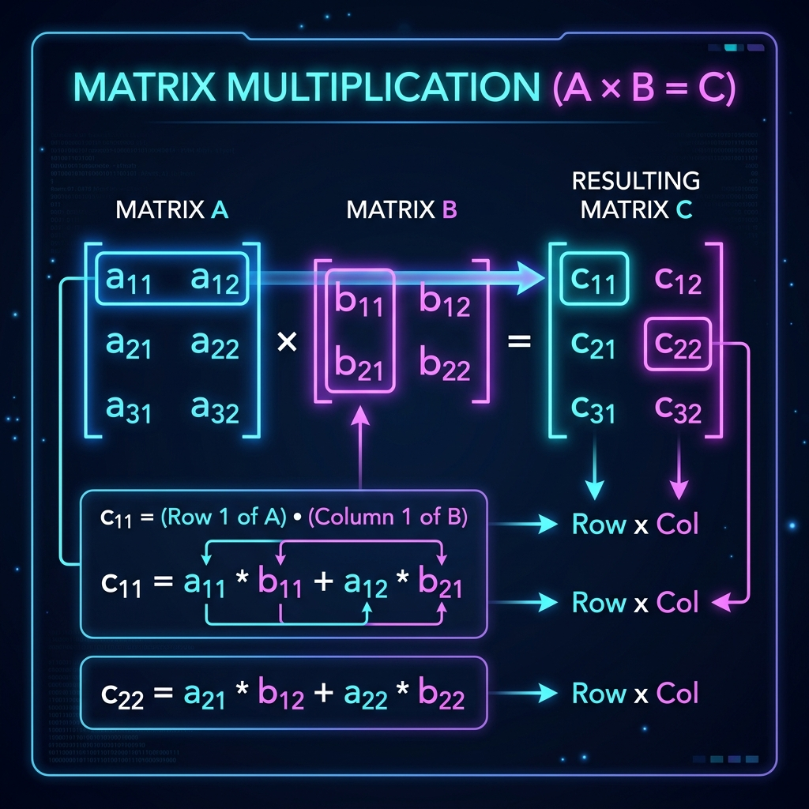
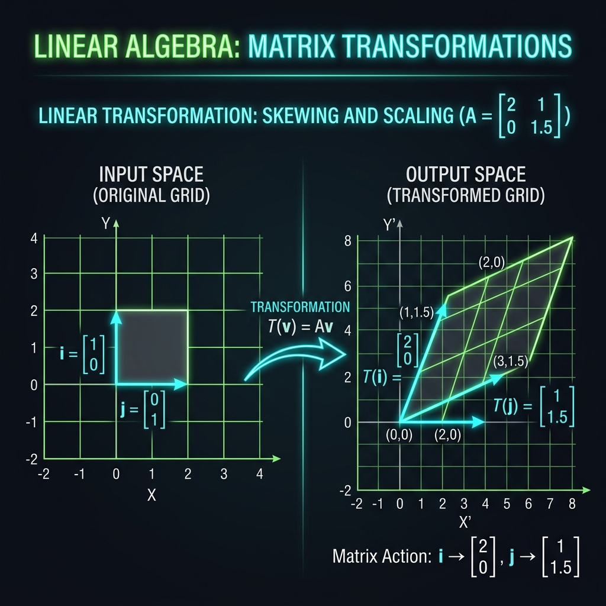

Mastering Matrix Algebra: A Comprehensive Guide to Linear Operations
From fundamental arithmetic to complex transformations, matrices are the bedrock of modern computing. This comprehensive guide explores every matrix operation, breaking down the mechanics of linear algebra so you can learn how and why these calculations work.
Understanding the Power of Matrices
At its core, a matrix is simply a rectangular array or grid of numbers, symbols, or expressions, arranged in rows and columns. While they might appear as abstract mathematical constructs initially, matrices are the fundamental language of linear algebra and multi-dimensional space. Whether you are developing 3D rendering engines for video games, training complex machine learning models, solving systems of differential equations, or working in quantum mechanics, matrices provide an incredibly efficient way to process and manipulate vast amounts of data simultaneously.
Instead of solving complex systems of linear equations one by one, matrix algebra allows mathematicians and computer scientists to express and solve entire systems in a single, elegant sweep. However, doing these calculations by hand—especially for anything larger than a 2x2 grid—is notoriously tedious, computationally heavy, and highly susceptible to basic arithmetic errors. Our free online matrix calculator exists precisely for this reason: to handle the numerical heavy lifting instantly, ensuring 100% accuracy while freeing you to focus on the higher-level logic of your problem.
The Fundamental Arithmetic of Matrices
Matrix Addition and Subtraction
Addition and subtraction are the most straightforward operations you can perform with matrices. The fundamental rule for adding or subtracting two matrices is that they must possess the exact same dimensions. You cannot add a 2x2 matrix to a 3x3 matrix. When the dimensions match, the operation is simply a matter of adding or subtracting the corresponding elements—the number in the first row and first column of Matrix A is added to the number in the first row and first column of Matrix B, and so forth. In physics and engineering, matrix addition is frequently used to combine different vectors or force fields acting on a singular object.
Matrix Multiplication (The Dot Product)
Unlike basic addition, matrix multiplication is significantly more complex and counter-intuitive. It doesn't involve simply multiplying corresponding elements. Instead, it relies on calculating the dot product of rows from the first matrix and columns from the second matrix.

For Matrix A to be multiplied by Matrix B, the number of columns in Matrix A must strictly equal the number of rows in Matrix B. If A is an m × n matrix and B is an n × p matrix, the resulting matrix will have dimensions m × p. A critical property of matrix multiplication is that it is not commutative. This means that in nearly all cases, A × B ≠ B × A. The order in which you multiply matrices dictates the sequence of transformations, making order paramount in fields like 3D computer graphics where translating then rotating an object yields vastly different results than rotating then translating.
Deep Dive into Advanced Matrix Properties
The Determinant (|A|)
The determinant is a special scalar value that can only be calculated from square matrices (e.g., 2x2, 3x3, 4x4). Geometrically, the determinant represents the scaling factor of a linear transformation described by the matrix. If you consider a matrix as a transformation applied to a geometric space, the determinant tells you exactly how much the area (in 2D) or volume (in 3D) of that space is stretched or compressed.

Crucially, if a matrix has a determinant of exactly zero, it is known as a singular matrix. Geometrically, this means the transformation squishes the space into a lower dimension (like flattening a 3D box into a flat 2D plane). A determinant of zero indicates that the matrix equations are linearly dependent, and the system has either no unique solution or infinite solutions.
The Matrix Inverse (A⁻¹)
In traditional arithmetic, every number (except zero) has a reciprocal, allowing you to effectively divide. In linear algebra, there is no direct concept of matrix division; instead, we multiply by the Inverse Matrix. The inverse of Matrix A, denoted as A⁻¹, is a unique matrix that, when multiplied by the original Matrix A, results in the Identity Matrix (a matrix consisting of 1s down the main diagonal and 0s everywhere else).
Finding the inverse is essential for solving complex linear equations (e.g., AX = B implies X = A⁻¹B). However, as mentioned earlier, a matrix can only be inverted if its determinant is non-zero. Calculating inverses for 3x3 and 4x4 matrices by hand requires computing determinants, matrices of minors, and adjugates—a process fraught with potential errors, making our online calculator an invaluable asset.
The Transpose (Aᵀ)
Transposing a matrix is a structural operation rather than an arithmetic one. It involves flipping a matrix over its main diagonal. Effectively, the rows of the original matrix become the columns of the transposed matrix, and vice versa. If Matrix A has dimensions m × n, its transpose Aᵀ will have dimensions n × m. Transposition is a foundational operation in statistics, data science, and calculating dot products of vectors. Matrices that are perfectly identical to their own transposes are called symmetric matrices.
The Trace (tr(A))
The trace of a square matrix is remarkably simple to calculate but holds profound mathematical significance. It is simply the sum of all the elements situated on the main diagonal (from the top-left to the bottom-right). Despite its simple calculation, the trace is invariant under cyclic permutations and coordinate transformations, making it highly useful in advanced applications like quantum mechanics and tensor analysis.
Intermediate Matrix Operations: Minors, Cofactors, and Adjugates
When performing advanced matrix operations, particularly finding the inverse of a 3x3 or 4x4 matrix manually, several intermediate matrices must be calculated:
- Matrix of Minors: The minor of a specific element in a matrix is the determinant of the smaller sub-matrix that remains after deleting the row and column containing that specific element. You calculate a minor for every single position to build a new matrix.
- Cofactor Matrix: The cofactor matrix is derived directly from the matrix of minors. It involves applying a checkerboard pattern of positive and negative signs to the minors. Specifically, the sign is determined by (-1)i+j, where i and j are the row and column indices.
- Adjugate Matrix: Often called the classical adjoint, the adjugate matrix is simply the transpose of the cofactor matrix. To finally find the inverse of the original matrix, you multiply the adjugate matrix by the reciprocal of the original matrix's determinant (1/|A| * Adjugate).
As you can see, computing these intermediate steps for large matrices is exceptionally time-consuming. Utilizing our matrix solver allows you to instantly bypass these tedious steps to arrive at the final adjugate or cofactor matrix with mathematical certainty.
Explore Related Math Tools
Working on complex math problems? Check out our other advanced calculators.
Fraction Calculator
Add, subtract, multiply and divide complex fractions.
Percentage Tools
Find part-to-whole ratios, percentage changes, and exact values.
Quadratic Equation
Solve polynomial equations instantly with step-by-step breakdowns.
Standard Deviation
Calculate variance, mean, and standard deviation for any dataset.
Built for Educational Speed and Accuracy
Our Matrix Solver Online Calculator is engineered to be your definitive linear algebra companion. By allowing you to switch seamlessly between 2x2, 3x3, and 4x4 dimensions, and instantly returning complex calculations like determinants, inverses, and adjugates, we eliminate the tedious scratchpad work. Understanding matrix mechanics is paramount, but executing them mechanically is a solved problem. Bookmark this calculator hub for your next academic assignment, engineering project, or software development task!